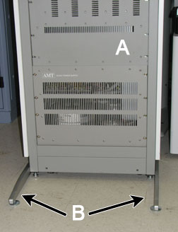
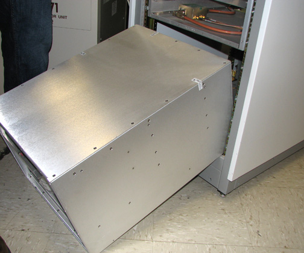

- 00000018WIA3004C030GYZ
- id_123749381.12
- Dec 11, 2024, 3:11:35 PM
Replacing the 3.0T Multi-Nuclear Spectroscopy (MNS) cabinet components
Replace the 3.0T Multi-Nuclear Spectroscopy (MNS) cabinet components.
Prerequisites
| Personnel requirements | |||
|---|---|---|---|
| Required persons | Preliminary requirements | Procedure | Finalization |
| 1 to 4 | - | 10 to 45 minutes (see Procedure Overview) | - |
| Tools and test equipment | |||
|---|---|---|---|
| Item | Quantity | Part number | Manufacturer |
| Nonferrous Medium Phillips Head Screwdriver | 1 | - | - |
| 5/16 inch Open-End Wrench | 1 | - | - |
| 8 mm Wrench | 1 | - | - |
| Pair: Cut-Resistant Gloves | 1 | - | - |
| Replacement parts | |||
|---|---|---|---|
| Item | Quantity | Part number | Manufacturer |
| Controller Module | 1 | 2206456-24 | - |
| Driver Module | 1 | - | - |
| RF Amplifier | 1 | 2206456-3 | - |
| RF Power Amplifier Combiner/Coupler | 1 | 2206456-4 | - |
| Power Supply | 1 | 2206456-8 | - |
| 5 Amplifier Fuses | 1 | 46-170021P29 | - |
| Required conditions | ||||
|---|---|---|---|---|
|
Install anti-tip legs on both sides of the MNS cabinet. The anti-tip legs are strapped inside the rear of the cabinet on the left side. Remove the anti-tip legs from the cabinet, and align them with the screw openings at the bottom of the cabinet. Screw one leg on each side.

|
|
Before working in any GE HealthCare MR suite or doing any GE HealthCare service procedure, you must:
If you have any safety concerns at any time, do not begin work or immediately stop work and move to a safe location. Immediately contact your supervisor or site safety officer for instructions on how to proceed. | ||||||||||||
| ||||||||||||
About this task
| FRU | Persons Required | Procedure Timing |
| AMT System Control Module | 1 | 30 minutes |
| Driver Module | 1 | 30 minutes |
| Power Amplifier Module | 1 | 30 minutes |
| Combiner | 1 | 30 minutes |
| Power Supply | 4 | 45 minutes |
| Fuses | 1 | 10 minutes |
Introduction to MNS cabinet
About this task
This section displays the location of MNS FRUs in the MNS cabinet from a front and rear view.
Procedure
Replacing AMT system control module
About this task
Refer to MNS cabinet front view and MNS cabinet rear view for FRU locations.
Procedure
Replacing driver module
About this task
Refer to MNS cabinet front view and MNS cabinet rear view for FRU locations.
Procedure
Replacing power amplifier module(s)
About this task
Refer to MNS cabinet front view and MNS cabinet rear view for FRU locations.
Procedure
Disconnect the system power cable at J12 on the power supply AMT system control module - cabinet connections.DANGER 
Carefully lift the fan panel into place and position it on the rack.CAUTION 
Replacing combiner
About this task
Refer to MNS cabinet front view and MNS cabinet rear view for FRU locations.
Procedure
Replacing power supply
About this task
Refer to MNS cabinet front view and MNS cabinet rear view for FRU locations.
| CAUTION | |
|---|---|
Procedure
Working from the front, with the help of three additional field engineers, carefully slide the power supply out of the front of the rack.Warning 
Figure 19. Power supply partially removed 
NoteIt may be easier to partially remove the power supply before setting it on the floor, as shown above.
Replacing fuses
About this task
The fan module and the internal power supply are equipped with replaceable fuses. The fans are equipped with two 250 volt, 8 amp, time-delay type 8AT fuses. The internal power supply is equipped with two 250 volt, 5 amp, time-delay type 5AT fuses. See MNS cabinet rear view for details.
Finalization
Finalization
If you did a replacement from Replacing AMT system control module, Replacing driver module, Replacing power amplifier module(s), or Replacing combiner, do Calibrating RF Amplifier and UPM.